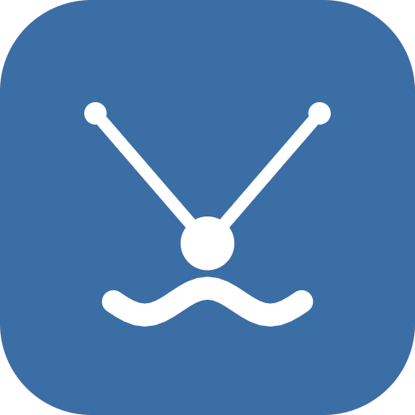

Scribbler
Flash a board, from the browser
Scribbler is a pen plotter that hangs on a wall from two belts. Its brain is a Seeed XIAO ESP32-S3 Plus; this page puts the firmware and the web interface on a blank one in about a minute — no PlatformIO, no Python, nothing to install.

Before you start
- Chrome, Edge or Opera on a computer
- A USB-C cable that carries data
- A Seeed XIAO ESP32-S3 Plus (16 MB flash)
Plug the cable into the XIAO's own USB-C port, not into the plotter board's power input — that one only negotiates power. The XIAO may sit on the board or be on its own; the motors need no power for this.
Safari and Firefox cannot do this — they have no Web Serial API. On a phone or tablet there is no port to connect to at all.
If the browser cannot find the board
The XIAO's own USB port is not a classic USB-serial bridge, so it does not always drop into the bootloader by itself. If "Connect" shows no port, or the install stalls right at the start:
- Unplug the USB cable.
- Hold the board's BOOT button down.
- Plug the cable back in while still holding it, then let go.
- Click "Connect and install" again.
After it's flashed
The board reboots and, with no WiFi configured yet, opens an access point
of its own named Scribbler (the display, if one is fitted,
shows it). Join it from a phone or laptop — a setup page appears by
itself and asks which network to use. From then on it answers at
http://scribbler.local or at the address the display shows.
Then, on the wall, the Setup tab walks through the calibration once: the distance between the two anchors, winding both belts in to their stop, running out to the home position, hanging the belt loops on the anchors, and the pen's up and down angles. Drawings come from a microSD card in the board — uploaded through the Jobs tab, in the same format Mural's web interface writes.
Updates after this one never need a cable again: they go through the
Update tab, or happen by themselves from the release
channel the device is set to. That tab, along with the hardware tests,
the log and the storage browser, sits behind a password you set once at
http://scribbler.local/#expert. Drawing and calibrating are
open to everyone on the network.
What exactly does this write?
Five parts, at the offsets a factory-fresh XIAO ESP32-S3 Plus needs: the second-stage bootloader, the partition table, the tiny stub that tells it which partition to boot first, the firmware itself, and the filesystem image holding the web interface. The "erase" option this tool offers first clears the whole chip, which is the safe default for a board that has never run this firmware before — and the right choice if the partition table has changed since it last did. Reflashing a board that is already running Scribbler does not need any of this: use its own Update tab, which only ever replaces the two halves that actually changed. Built straight from the latest stable release; see the README for what the firmware does and how it is built.